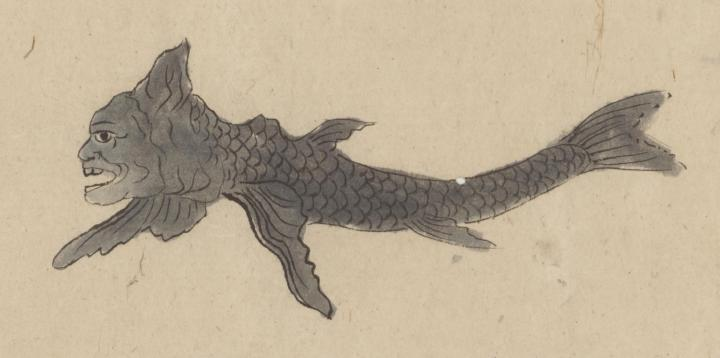

← 图鉴索引

禽獣の一つとして、人面の魚が描かれている。
出典：親書誌：U426_nichibunken_0377：禽獣図巻；キンジュウ ズカン／日付：2014／資源識別子：U426_nichibunken_0377_0001_0001
Copyright (c)2010- International Research Center for Japanese Studies, Kyoto, Japan. All rights reserved.